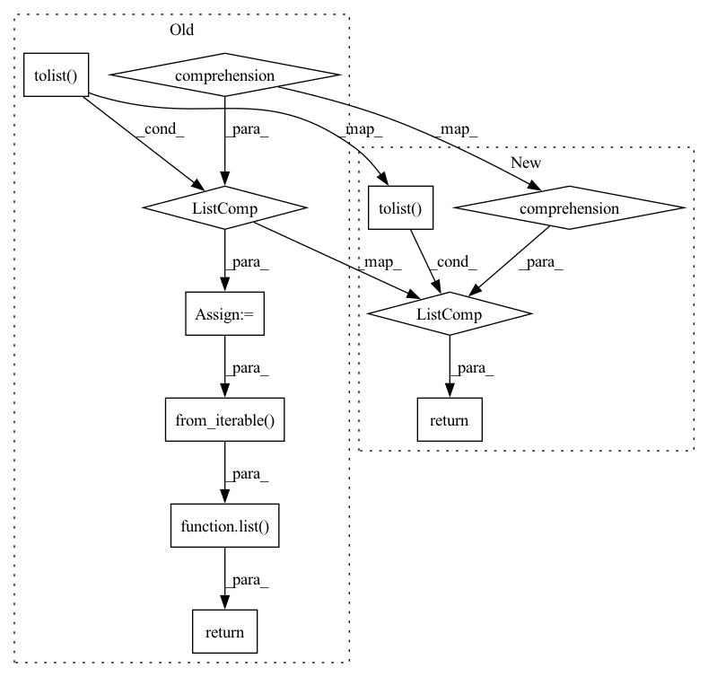

Pattern ID :35295
Before Change
def _get_bbox_area(labels: List[torch.Tensor]) -> List[int]:
Return a list containing the area of bboxes in batch.
areas = [(label.reshape((-1, 5))[:, 4] * label.reshape((-1, 5))[:, 3]).tolist()
for label in labels]
return list( chain.from_iterable( areas))
def _count_num_bboxes(labels: List[torch.Tensor]) -> List[int]:
Return a list containing the number of bboxes in per sample batch.After Change
def _get_bbox_area(labels: List[torch.Tensor]) -> List[List[int]]:
Return a list containing the area of bboxes in batch.
return [(label.reshape((-1, 5))[:, 4] * label.reshape((-1, 5))[:, 3]).tolist()
for label in labels]
def _count_num_bboxes(labels: List[torch.Tensor]) -> List[int]:
Return a list containing the number of bboxes in per sample batch.In pattern: SUPERPATTERN
Frequency: 4
Non-data size: 11
Instances Fragment ID: 100399150
Project Name: deepchecks/deepchecks
Commit Name: a68b10a9de4aa90dbd9d477b6b418a9c1a4f5e2d
Time: 2022-03-23
Author: matan@deepchecks.com
File Name: deepchecks/vision/utils/label_prediction_properties.py
M Class Name: AnonimousClass
N Class Name: AnonimousClass
M Method Name: _get_bbox_area(1)
N Method Name: _get_bbox_area(1)
M Parent Class:
N Parent Class:
M File Name: deepchecks/vision/utils/label_prediction_properties.py
N File Name: deepchecks/vision/utils/label_prediction_properties.py
M Start Line: 24
M End Line: 26
N Start Line: 23
N End Line: 24
Before Change
def _get_samples_per_class_object_detection(labels: List[torch.Tensor]) -> List[int]:
Return a list containing the classes in batch.
classes = [tensor.reshape((-1, 5))[:, 0].tolist() for tensor in labels]
return list( chain.from_iterable( classes))
def _get_samples_per_class_classification(labels: torch.Tensor) -> List[int]:
Return a list containing the class per image in batch.After Change
def _get_samples_per_class_object_detection(labels: List[torch.Tensor]) -> List[List[int]]:
Return a list containing the classes in batch.
return [tensor.reshape((-1, 5))[:, 0].tolist() for tensor in labels]
def _get_samples_per_class_classification(labels: torch.Tensor) -> List[int]:
Return a list containing the class per image in batch. Fragment ID: 100399153
Project Name: deepchecks/deepchecks
Commit Name: a68b10a9de4aa90dbd9d477b6b418a9c1a4f5e2d
Time: 2022-03-23
Author: matan@deepchecks.com
File Name: deepchecks/vision/utils/label_prediction_properties.py
M Class Name: AnonimousClass
N Class Name: AnonimousClass
M Method Name: _get_samples_per_class_object_detection(1)
N Method Name: _get_samples_per_class_object_detection(1)
M Parent Class:
N Parent Class:
M File Name: deepchecks/vision/utils/label_prediction_properties.py
N File Name: deepchecks/vision/utils/label_prediction_properties.py
M Start Line: 37
M End Line: 38
N Start Line: 35
N End Line: 35
Before Change
def _get_predicted_bbox_area(predictions: List[torch.Tensor]) -> List[int]:
Return a list containing the area of bboxes per image in batch.
areas = [(prediction.reshape((-1, 6))[:, 2] * prediction.reshape((-1, 6))[:, 3]).tolist()
for prediction in predictions]
return list( chain.from_iterable( areas))
DEFAULT_CLASSIFICATION_PREDICTION_PROPERTIES = [
{"name": "Samples Per Class", "method": _get_samples_per_predicted_class_classification, "output_type": "class_id"}After Change
def _get_predicted_bbox_area(predictions: List[torch.Tensor]) -> List[List[int]]:
Return a list containing the area of bboxes per image in batch.
return [(prediction.reshape((-1, 6))[:, 2] * prediction.reshape((-1, 6))[:, 3]).tolist()
for prediction in predictions]
DEFAULT_CLASSIFICATION_PREDICTION_PROPERTIES = [
{"name": "Samples Per Class", "method": _get_samples_per_predicted_class_classification, "output_type": "class_id"} Fragment ID: 100399152
Project Name: deepchecks/deepchecks
Commit Name: a68b10a9de4aa90dbd9d477b6b418a9c1a4f5e2d
Time: 2022-03-23
Author: matan@deepchecks.com
File Name: deepchecks/vision/utils/label_prediction_properties.py
M Class Name: AnonimousClass
N Class Name: AnonimousClass
M Method Name: _get_predicted_bbox_area(1)
N Method Name: _get_predicted_bbox_area(1)
M Parent Class:
N Parent Class:
M File Name: deepchecks/vision/utils/label_prediction_properties.py
N File Name: deepchecks/vision/utils/label_prediction_properties.py
M Start Line: 72
M End Line: 74
N Start Line: 68
N End Line: 69
Before Change
def _get_samples_per_predicted_class_object_detection(predictions: List[torch.Tensor]) -> List[int]:
Return a list containing the classes in batch.
classes = [tensor.reshape((-1, 6))[:, -1].tolist() for tensor in predictions]
return list( chain.from_iterable( classes))
def _get_predicted_bbox_area(predictions: List[torch.Tensor]) -> List[int]:
Return a list containing the area of bboxes per image in batch.After Change
def _get_samples_per_predicted_class_object_detection(predictions: List[torch.Tensor]) -> List[List[int]]:
Return a list containing the classes in batch.
return [tensor.reshape((-1, 6))[:, -1].tolist() for tensor in predictions]
def _get_predicted_bbox_area(predictions: List[torch.Tensor]) -> List[List[int]]:
Return a list containing the area of bboxes per image in batch. Fragment ID: 100399156
Project Name: deepchecks/deepchecks
Commit Name: a68b10a9de4aa90dbd9d477b6b418a9c1a4f5e2d
Time: 2022-03-23
Author: matan@deepchecks.com
File Name: deepchecks/vision/utils/label_prediction_properties.py
M Class Name: AnonimousClass
N Class Name: AnonimousClass
M Method Name: _get_samples_per_predicted_class_object_detection(1)
N Method Name: _get_samples_per_predicted_class_object_detection(1)
M Parent Class:
N Parent Class:
M File Name: deepchecks/vision/utils/label_prediction_properties.py
N File Name: deepchecks/vision/utils/label_prediction_properties.py
M Start Line: 66
M End Line: 67
N Start Line: 63
N End Line: 63